In China Employee Termination: Pulse Dependency-Map Brief for Foreign Employers (2026 Hourly Run)
Key takeaways
- Foreign employers can reduce China termination risk by mapping cross-functional dependencies before release.
- Most avoidable errors are dependency failures, not isolated legal mistakes.
- Route, evidence, communication, settlement, and closure each depend on upstream control quality.
- Payroll and IIT dependencies should be resolved before communication release.
- Legal depth supports confidence, but dependency control determines whether execution stays coherent.
Pulse opener: dependency gaps are where risk hides
In cross-border operations, teams often focus on individual tasks—legal drafts, HR notices, payroll settlement—without mapping the dependencies between them. The result is predictable: one team finishes “its part,” but the case still fails because a prerequisite from another team was incomplete.
This run rotates to a dependency-map format so foreign operators can see where execution relies on prior controls and where dependency breaks should trigger pause or escalation.
Plain-language legal context first
China termination decisions are generally route-based under labor law and implementation regulations. In disputes, outcomes depend heavily on whether the employer’s actions and records form a coherent chain aligned with the selected route.
For foreign teams, dependency integrity is therefore a legal-risk control.
Dependency map: key links, common breakpoints, and fixes
Dependency 1 — Route dependency
Dependency link: communication, evidence framing, and settlement logic depend on route clarity.
Failure mode: route changes late after downstream artifacts are drafted.
Control owner: legal lead.
Unblock action: lock route memo version before downstream work begins.
Dependency 2 — Evidence dependency
Dependency link: route defensibility depends on evidence ownership and traceability.
Failure mode: critical facts cannot be attributed to accountable owners.
Control owner: legal + HR.
Unblock action: enforce evidence index with owner/source/status for critical facts.
Dependency 3 — Narrative dependency
Dependency link: employee-facing communication depends on legal rationale consistency.
Failure mode: HR/legal wording drift after approval.
Control owner: HR communications owner.
Unblock action: single master narrative with change-log approval.
Dependency 4 — Settlement dependency
Dependency link: final payroll execution depends on validated treatment assumptions.
Failure mode: payroll/IIT assumptions remain open near cutoff.
Control owner: payroll lead + legal reviewer.
Unblock action: joint sign-off required before release.
Dependency 5 — Local-practice dependency
Dependency link: final risk posture depends on city-level practice awareness.
Failure mode: local uncertainty communicated informally and not governance-owned.
Control owner: local HR/legal with regional governance.
Unblock action: formal local-variance note with options and owner deadline.
Dependency 6 — Closure dependency
Dependency link: case defensibility depends on post-execution retrievability.
Failure mode: closure marked complete without retrieval test.
Control owner: operations/records owner.
Unblock action: mandatory retrieval test before closure status.
Practical implications for foreign operators
Dependency mapping helps global teams move from fragmented execution to coordinated control. It clarifies that release readiness is not about task completion count; it is about whether upstream prerequisites were completed correctly.
For leadership, dependency reporting is useful because it shows where bottlenecks recur and where process redesign will have the highest impact.
Operations module
A) SOP by role ownership
Legal: own route and legal-assumption dependencies.
HR: own narrative and chronology dependencies.
Payroll: own settlement and tax dependencies.
Manager: adhere to communication-boundary dependencies.
Vendor/EOR: maintain handoff dependency visibility.
B) Document checklist and dependency gates
Required artifacts:
- route-confidence memo,
- evidence index,
- communication baseline,
- settlement worksheet + tax notes,
- local variance note,
- retrieval-test record,
- timestamped approvals.
Gate rules:
- no downstream progression when prerequisite dependency is unresolved,
- each failed dependency requires owner/date and closure evidence.
C) Exception pathways
Pathway A: route dependency fail → legal hold and reset.
Pathway B: evidence dependency fail → ownership closure hold.
Pathway C: narrative dependency fail → freeze communications.
Pathway D: settlement dependency fail → payroll/legal escalation hold.
Pathway E: closure dependency fail → reopen closure.
D) System controls and audit fields
Suggested fields:
dependency_typeupstream_statusdownstream_block_flagownerdeadlineclosure_evidenceoverride_reason
Control standards:
- auto-block downstream actions on unresolved critical dependencies,
- immutable logs for dependency state changes,
- monthly recurrence review by dependency type/location.
Common mistakes and prevention
Mistake: treating tasks as independent
Prevention: map prerequisites before scheduling downstream steps.
Mistake: unclear dependency ownership
Prevention: assign one owner per critical dependency.
Mistake: resolving dependencies verbally
Prevention: require written closure evidence for each dependency.
Mistake: settlement dependency deferred to end
Prevention: move settlement dependency validation earlier.
Mistake: closure dependency ignored
Prevention: enforce retrieval test as non-optional gate.
What to watch next
Foreign operators should monitor which dependencies fail most often and how long they remain unresolved. Recurrent failures typically indicate structural process design issues.
Dependency governance cadence
Use weekly dependency reviews for active cases and monthly recurrence analysis for system improvement. Weekly cadence protects near-term execution quality; monthly cadence reduces repeat failure patterns.
Dependency threshold policy
Classify dependencies by impact level. High-impact unresolved dependencies in route, evidence, settlement, or closure should block release by default. Medium-impact dependencies may proceed only with documented owner/date remediation.
Executive dashboard
Track four metrics:
1) high-impact dependency closure rate pre-release,
2) average dependency aging time,
3) override frequency,
4) recurrence by dependency type and city/function.
Dependency calibration across regions
For multinational operators, dependency definitions should be calibrated regularly so teams apply the same release logic. A monthly calibration review can compare recent cases and align what counts as "resolved" versus "pending" for each critical dependency. Without calibration, one region may overstate readiness while another applies stricter standards, creating inconsistent risk posture.
Calibration should prioritize route, settlement, and local-variance dependencies, where interpretation drift is most common. Consistent definitions improve governance comparability and reduce unnecessary escalation noise.
Dependency SLA matrix
A dependency map is most effective when each unresolved dependency has a response clock:
- Route/evidence high-impact dependency: same-day closure target or release hold.
- Settlement high-impact dependency: immediate payroll/legal review before next cutoff.
- Narrative dependency: freeze communication until baseline reconciliation.
- Closure dependency: reopen and complete retrieval remediation within one business day.
Time-bound SLAs prevent unresolved dependencies from lingering as known-but-unfixed risks.
FAQ
Is dependency mapping legal advice?
No. It is an operational control framework informed by legal and practitioner sources.
Can smaller teams use this model?
Yes. Even a lightweight dependency register materially improves coordination.
Which dependency usually drives the most risk?
Settlement dependency failures often create disproportionate downstream exposure.
Does this replace local counsel?
No. It complements local legal/payroll advice with execution controls.
Is this model uniform across China cities?
Baseline model is broad, but local practice differences still require localization.
What KPI should leaders track first?
High-impact dependency closure rate before release.
Legal appendix (secondary depth)
1) Core legal anchors
The PRC Labor Contract Law and implementation regulations provide statutory framework for termination routes and obligations. SPC interpretations provide labor-dispute application context.
2) Practitioner and market synthesis
Practitioner guidance highlights route/process coherence and cross-functional control. Market/payroll context reinforces settlement/tax handling as risk-sensitive execution domains.
3) Residual uncertainty
City-level variance and language nuance can affect edge-case outcomes; high-exposure matters require localized professional advice.
Source-fit note for this run
This run maintained required source mix and rotated to a dependency-map structure to improve cross-functional execution clarity. Repetitive signal-audit phrasing was replaced with dependency failure and unblock logic.
Disclaimer
This content is informational only and does not constitute legal, tax, payroll, accounting, or compliance advice. Employers should seek qualified local professional advice for case-specific decisions.
Sources
- National People's Congress. Labor Contract Law of the PRC (English text). Accessed 2026-03-01: http://www.npc.gov.cn/zgrdw/englishnpc/Law/2007-12/13/content_1384064.htm
- State Council. Implementation Regulations of the Labor Contract Law (Decree No. 535). Accessed 2026-03-01: https://www.gov.cn/gongbao/content/2008/content_1124615.htm
- Supreme People's Court. Interpretation (I) on Application of Labor Dispute Law. Accessed 2026-03-01: https://www.court.gov.cn/fabu/xiangqing/243981.html
- China Briefing. Employee Termination in China. Updated 2025-10-17, accessed 2026-03-01: https://www.china-briefing.com/news/employee-termination-in-china/
- Littler. Key Recent Developments in China's Employment Law. Published 2024-03-20, accessed 2026-03-01: https://www.littler.com/news-analysis/asap/key-recent-developments-chinas-employment-law-china-us-comparative-perspective
- PwC. PRC Individual Taxes on Personal Income (Tax Summaries). Accessed 2026-03-01: https://taxsummaries.pwc.com/peoples-republic-of-china/individual/taxes-on-personal-income
Need local employment support in China?
If you need a compliance-first partner for hiring, payroll, and risk controls in China, China-Payroll.com can help evaluate the right setup.
Image Prompt Pack
Create a 16:9 hero image for article title: 'In China Employee Termination: Pulse Dependency-Map Brief for Foreign Employers (2026 Hourly Run)'. Scene: global operations team evaluating workforce model options for China market entry. Include motifs: decision m…